Ανδρεαδάκης Αντώνης 2013030059
Αναθεωρημένη έκδοση (Νοέμβριος 2026): οι ασκήσεις 4 (ερώτημα C), 5 και 7 ξαναγράφτηκαν μετά από διόρθωση του κώδικα και η άσκηση 6 προστέθηκε.
Στην άσκηση αυτή, ασχοληθήκαμε με την αναλυτική εύρεση της κλίσης σε ένα σύνολο m δεδομένων {(x(1), y(1)), (x(2), y(2)), … , (x(m), y(m))}, όπου x(i) ∈ ℝn×1 είναι τα διανύσματα χαρακτηριστικών και y(i) ∈ {0,1} ορίζουν την κλάση κάθε δείγματος (labels).
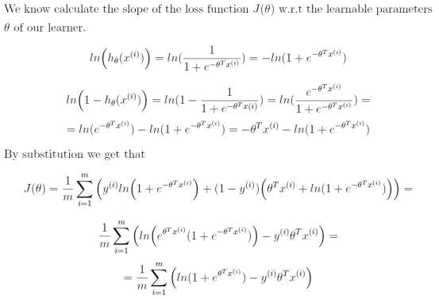
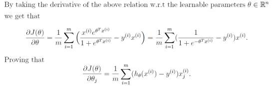
Χρησιμοποιώντας τη λογιστική παλινδρόμηση, για να προβλέψουμε αν ένας μαθητής γίνει δεκτός σε ένα πανεπιστήμιο, με βάση τους βαθμούς του σε 2 εξετάσεις, πήραμε τα παρακάτω αποτελέσματα. Αρχικά προβάλλουμε τα δεδομένα:
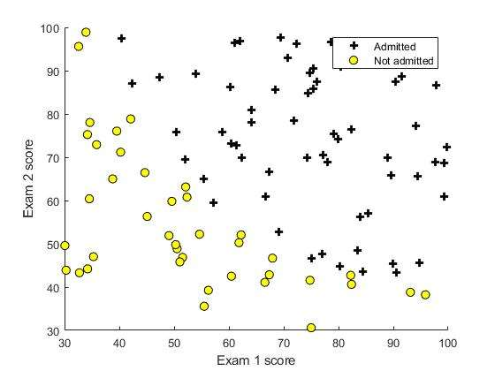
Υλοποιώντας τις συναρτήσεις που μας ζητήθηκαν και εκτελώντας τον κώδικα, είχαμε τα εξής αποτελέσματα:
Κόστος και κλίση:
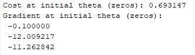
Γράφημα από την plotDecisionBoundary:
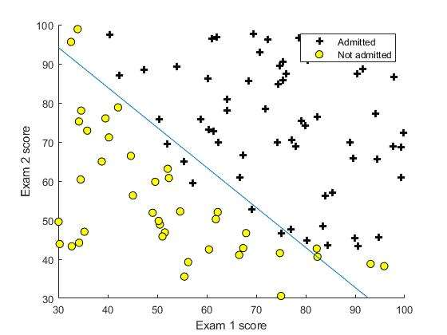
Με βελτιστοποίηση:
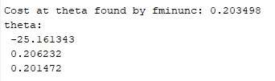
Πρόβλεψη αν ο φοιτητής γίνει δεκτός:
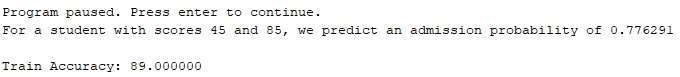
Εδώ εφαρμόσαμε ομαλοποιημένη λογιστική παλινδρόμηση, για την πρόβλεψη ελέγχου ποιότητας στα μικροτσίπ μιας μονάδας κατασκευής. Αρχικά προβάλλουμε τα δεδομένα:
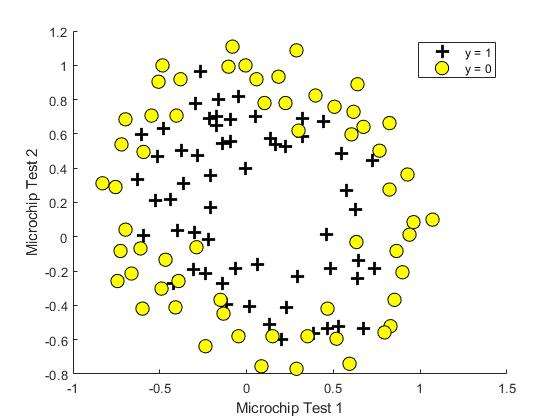
Με μαύρο απεικονίζονται όσα έχουν ελεγχθεί και είναι ποιοτικά, ενώ με κίτρινο όσα δεν είναι ποιοτικά.
Προχωρώντας τον κώδικα έχουμε:
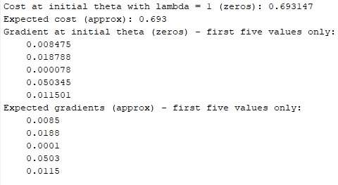
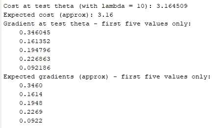
Και τα σύνορα απόφασης για διάφορες τιμές του λ:
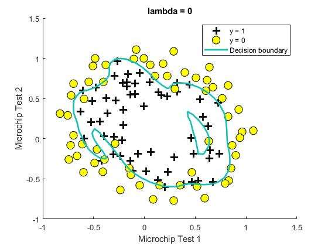
Train Accuracy: 88.983051
Expected accuracy (with lambda = 0): 89(approx)
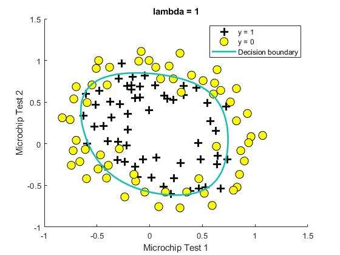
Train Accuracy: 83.050847
Expected accuracy (with lambda = 1): 83.1(approx)
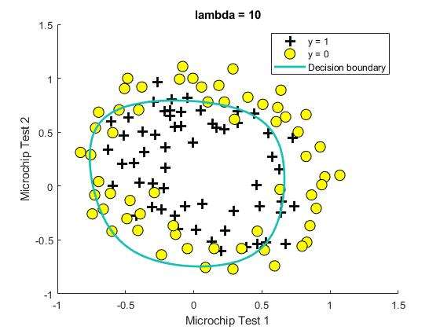
Train Accuracy: 74.576271
Expected accuracy (with lambda = 10): 74.6(approx)
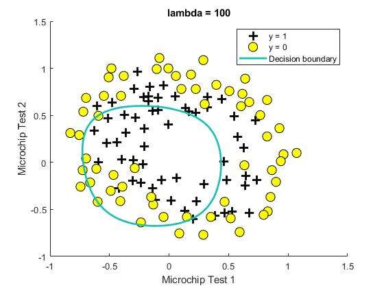
Train Accuracy: 61.016949
Expected accuracy (with lambda = 100): 61(approx)
Ο M-L.E. είναι η λύση του ακόλουθου προβλήματος μεγιστοποίησης:
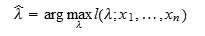
Η 1η συνθήκη για μέγιστο είναι:
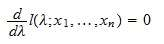
Η 1η παράγωγος της πιθανότητας log-likelihood, σε σχέση με την παράμετρο λ είναι:
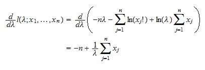
Η παράγωγος της πιθανότητας πρέπει να είναι μηδέν, σύμφωνα με την συνθήκη που αναφέρουμε παραπάνω. Οπότε τελικά έχουμε:
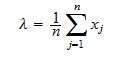
Μια πιο ακριβής λύση είναι η εξής:
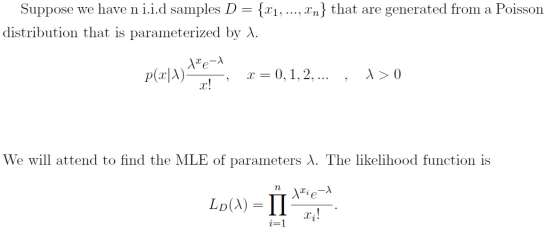
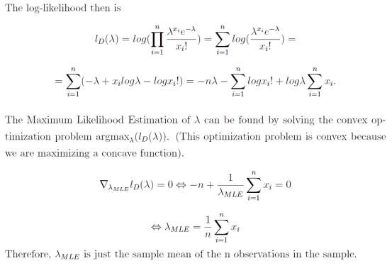
Εδώ, υλοποιήσαμε τον naive Bayes ταξινομητή για αναγνώριση προτύπων. Τα ψηφία 0 έως 9 αντιστοιχούν σε 10 κλάσεις και κάθε δείγμα είναι αναπαράσταση μιας εικόνας με διαστάσεις 28x28. Στην περίπτωσή μας, υποθέτουμε ότι τα χαρακτηριστικά (εικονοστοιχεία-pixels) είναι ανεξάρτητα. Χρησιμοποιώντας την κατανομή Bernoulli, μοντελοποιούμε κάθε pixel από κάθε κλάση.
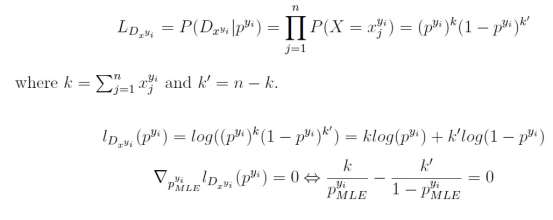
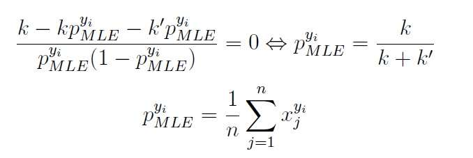
Παρακάτω στα γραφήματα, χρησιμοποιώντας τα δοσμένα δείγματα εκπαίδευσης, για κάθε ψηφίο χρησιμοποιούμε τους εκτιμητές μέγιστης πιθανοφάνειας. Τρέχοντας τον κώδικα που δόθηκε ως παράδειγμα είχαμε την εξής εικόνα:
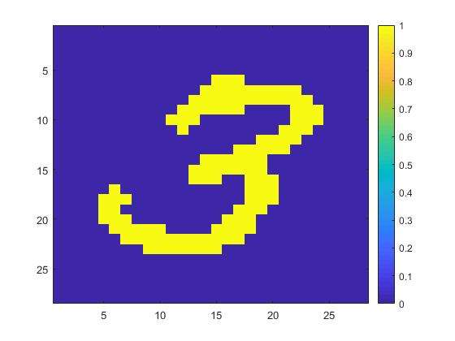
Μετά την εκπαίδευση κάθε ψηφίου, χρησιμοποιώντας την κατανομή Bernoulli έχουμε:
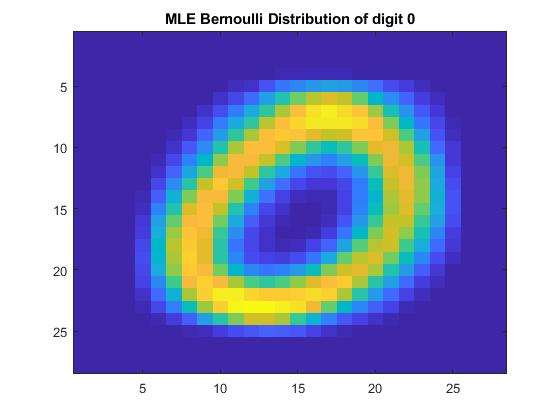
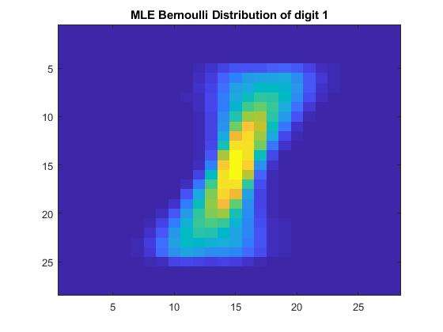
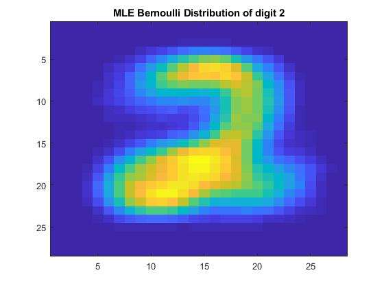
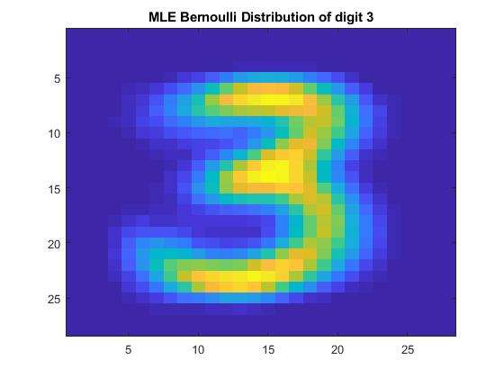
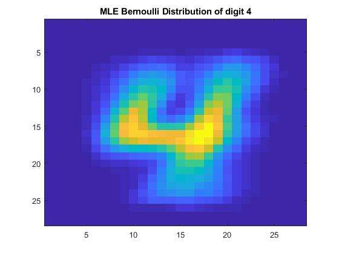
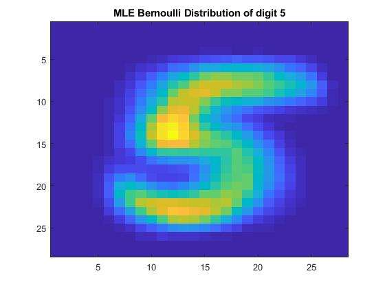
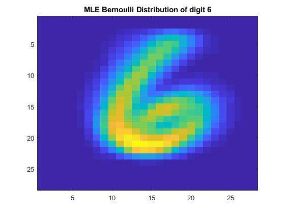
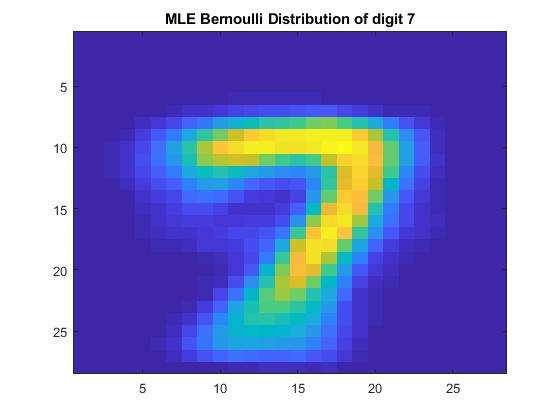
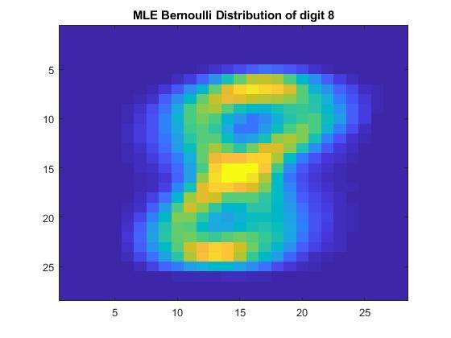
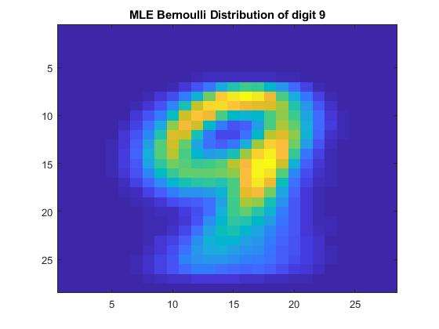
Για να ταξινομήσουμε ένα δείγμα ελέγχου x = (x1, …, x784) υπολογίζουμε, για κάθε ψηφίο y, την πιθανοφάνεια του δείγματος. Επειδή τα pixels θεωρούνται ανεξάρτητα, η πιθανοφάνεια είναι το γινόμενο των κατανομών Bernoulli όλων των pixels:
p(x | y) = ∏i (pyi)xi (1 − pyi)1 − xi
Το γινόμενο 784 αριθμών μικρότερων της μονάδας είναι πάρα πολύ μικρό, γι' αυτό στον κώδικα χρησιμοποιούμε τον λογάριθμό του:
ln p(x | y) = Σi [ xi ln pyi + (1 − xi) ln(1 − pyi) ]
Κάθε δείγμα ανατίθεται στο ψηφίο με τη μεγαλύτερη τιμή. Οι εκ των προτέρων πιθανότητες των κλάσεων είναι ίσες (500 δείγματα εκπαίδευσης για κάθε ψηφίο), οπότε δεν επηρεάζουν την απόφαση και παραλείπονται. Πολλά pixels έχουν εκτιμητή ακριβώς 0 (είναι σβηστά σε όλα τα δείγματα εκπαίδευσης του ψηφίου, όπως τα pixels στα άκρα της εικόνας), με αποτέλεσμα ο λογάριθμος να απειρίζεται. Για τον λόγο αυτό περιορίζουμε τις παραμέτρους στο διάστημα [10−10, 1 − 10−10] πριν πάρουμε τους λογαρίθμους.
Στην αρχική έκδοση της εργασίας, αντί για το γινόμενο είχαμε χρησιμοποιήσει τον μέσο όρο των πιθανοτήτων των pixels, κάτι που δεν αντιστοιχεί στον naive Bayes ταξινομητή και έδινε ακρίβεια μόλις 0.53. Με τη σωστή συνάρτηση πιθανοφάνειας ταξινομούνται σωστά 3991 από τα 5000 δείγματα ελέγχου, δηλαδή η ακρίβεια της ταξινόμησης είναι 0.7982 (79.82%).
Ο πίνακας confusion matrix (πλήθος δειγμάτων, 500 δείγματα ελέγχου ανά ψηφίο) είναι:
| Πραγματικό ψηφίο | Ταξινομήθηκε ως | |||||||||
|---|---|---|---|---|---|---|---|---|---|---|
| 0 | 1 | 2 | 3 | 4 | 5 | 6 | 7 | 8 | 9 | |
| 0 | 441 | 0 | 1 | 0 | 2 | 30 | 13 | 0 | 12 | 1 |
| 1 | 0 | 472 | 2 | 3 | 0 | 13 | 4 | 0 | 6 | 0 |
| 2 | 8 | 12 | 376 | 37 | 8 | 2 | 8 | 13 | 32 | 4 |
| 3 | 1 | 10 | 4 | 416 | 5 | 23 | 5 | 13 | 10 | 13 |
| 4 | 1 | 1 | 7 | 0 | 371 | 5 | 13 | 3 | 5 | 94 |
| 5 | 14 | 2 | 3 | 67 | 19 | 346 | 7 | 6 | 16 | 20 |
| 6 | 7 | 9 | 28 | 0 | 6 | 33 | 414 | 0 | 3 | 0 |
| 7 | 1 | 19 | 8 | 3 | 16 | 0 | 0 | 396 | 10 | 47 |
| 8 | 5 | 16 | 13 | 49 | 11 | 18 | 1 | 3 | 349 | 35 |
| 9 | 3 | 8 | 3 | 8 | 50 | 7 | 0 | 6 | 5 | 410 |
Διαιρώντας κάθε γραμμή με το πλήθος των δειγμάτων ελέγχου του ψηφίου (500), το στοιχείο (i, j) δείχνει πόσο συχνά το ψηφίο i ταξινομείται ως ψηφίο j. Η γραφική απεικόνιση του κανονικοποιημένου πίνακα είναι η παρακάτω:
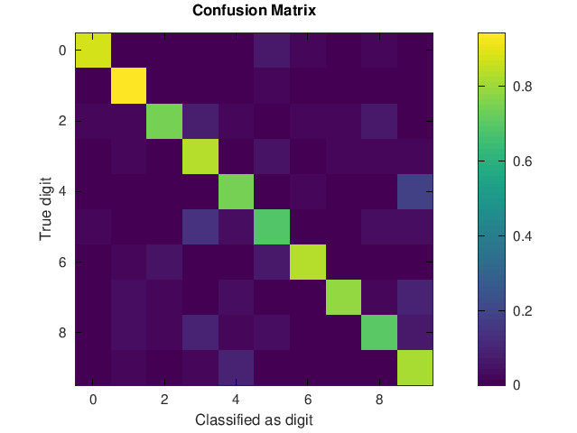
Παρατηρούμε ότι ο πίνακας έχει πλέον έντονη διαγώνιο. Το ψηφίο που αναγνωρίζεται καλύτερα είναι το 1 (94.4%) και ακολουθεί το 0 (88.2%), ενώ τα δυσκολότερα είναι το 5 (69.2%) και το 8 (69.8%). Τα περισσότερα λάθη γίνονται ανάμεσα σε ψηφία με παρόμοιο σχήμα: το 4 ταξινομείται ως 9 σε 94 δείγματα (18.8%) και το 9 ως 4 σε 50 (10%), το 5 ως 3 σε 67 (13.4%), το 8 ως 3 σε 49 (9.8%) και το 7 ως 9 σε 47 (9.4%). Αυτό είναι αναμενόμενο, αφού τα μοντέλα των ψηφίων αυτών (εικόνες του ερωτήματος B) επικαλύπτονται σε μεγάλο μέρος των pixels και η υπόθεση της ανεξαρτησίας των pixels δεν λαμβάνει υπόψη το σχήμα του ψηφίου συνολικά.
Σε αυτή την άσκηση, μελετήσαμε την Bayesian εκτίμηση του μ. Σε ένα σύνολο H(n) με n = 25 μετρήσεις, υποθέτοντας ότι η συνάρτηση πυκνότητας πιθανότητας των μετρήσεων είναι Gaussian, με γνωστή τυπική απόκλιση σ = 1.25, και ότι η εκ των προτέρων κατανομή της μέσης τιμής είναι επίσης Gaussian, p(μ) ~ N(μ0, σ02) με μ0 = 0.
Με Gaussian πιθανοφάνεια και Gaussian εκ των προτέρων κατανομή, η εκ των υστέρων κατανομή του μ είναι και αυτή Gaussian, p(μ | H(n)) ~ N(μn, σn2), με
μn = ( n σ02 mn + σ2 μ0 ) / ( n σ02 + σ2 ), σn2 = σ02 σ2 / ( n σ02 + σ2 )
όπου mn είναι ο μέσος όρος των n πρώτων μετρήσεων. Οι μετρήσεις διαβάζονται από το αρχείο data_2_5.txt και ο μέσος όρος και των 25 είναι m25 = 4.8674.
Για σ02 = 10σ2 σχεδιάσαμε σε κοινό γράφημα τη δεσμευμένη πυκνότητα πιθανότητας p(μ | H(n)), καθώς το n μεταβάλλεται από 1 έως 25:
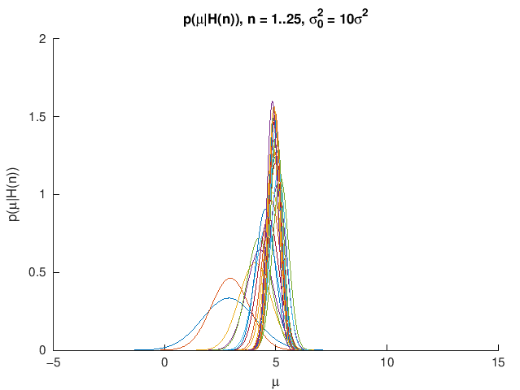
Για n = 1 η κατανομή είναι πλατιά (μ1 = 2.8912, σ1 = 1.1918), αφού έχουμε μόνο μία μέτρηση. Όσο αυξάνεται το n, η καμπύλη στενεύει και ψηλώνει και το κέντρο της πλησιάζει τον μέσο όρο των μετρήσεων: για n = 5 έχουμε μ5 = 4.2445 και σ5 = 0.5535, ενώ για n = 25 έχουμε μ25 = 4.8480 και σ25 = 0.2495. Δηλαδή η αβεβαιότητα για το μ μειώνεται καθώς βλέπουμε περισσότερα δεδομένα. Επειδή το σ02 είναι μεγάλο, η εκ των προτέρων πληροφορία (μ0 = 0) επηρεάζει ελάχιστα το αποτέλεσμα.
Η δεσμευμένη πυκνότητα μιας νέας μέτρησης x προκύπτει ολοκληρώνοντας ως προς το μ, p(x | H(n)) = ∫ p(x | μ) p(μ | H(n)) dμ, και είναι Gaussian με την ίδια μέση τιμή μn αλλά μεγαλύτερη διασπορά:
p(x | H(n)) ~ N(μn, σ2 + σn2)
Στη διασπορά σ2 των μετρήσεων προστίθεται δηλαδή η αβεβαιότητα σn2 που έχουμε για το μ. Τα γραφήματα για n = 1, …, 25 και για τις τέσσερις τιμές του σ02 είναι:
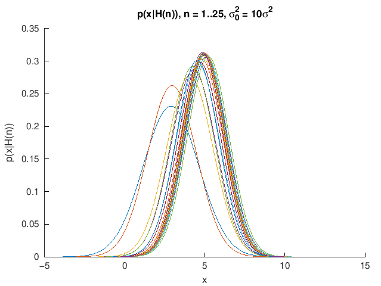
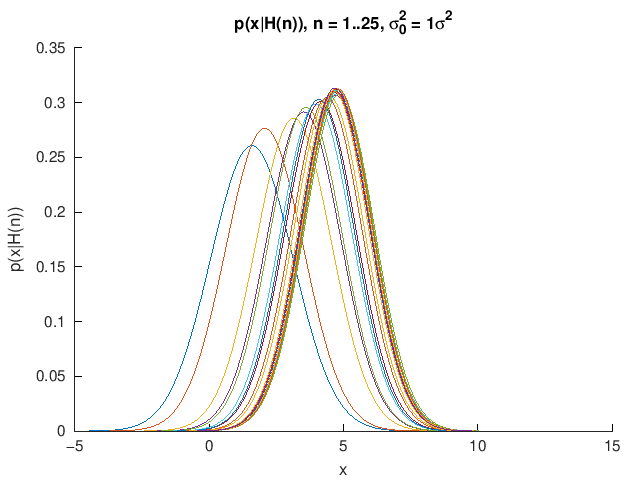
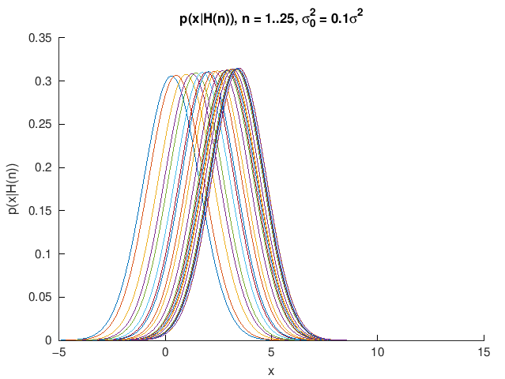
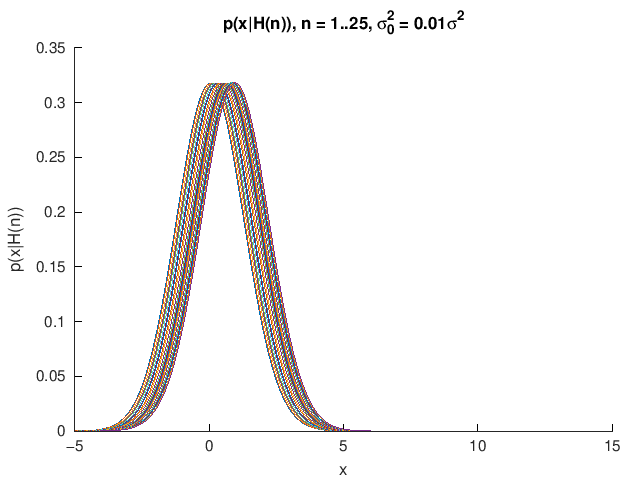
| σ02 | n = 1 | n = 5 | n = 25 | |||
|---|---|---|---|---|---|---|
| μέση τιμή | τυπ. απόκλιση | μέση τιμή | τυπ. απόκλιση | μέση τιμή | τυπ. απόκλιση | |
| 10σ2 | 2.8912 | 1.7271 | 4.2445 | 1.3671 | 4.8480 | 1.2747 |
| σ2 | 1.5901 | 1.5309 | 3.6079 | 1.3502 | 4.6802 | 1.2738 |
| 0.1σ2 | 0.2891 | 1.3056 | 1.4431 | 1.2910 | 3.4767 | 1.2677 |
| 0.01σ2 | 0.0315 | 1.2562 | 0.2062 | 1.2559 | 0.9735 | 1.2550 |
Παρατηρούμε ότι όσο αυξάνεται το n, η τυπική απόκλιση της p(x | H(n)) πλησιάζει τη γνωστή τιμή σ = 1.25, αφού η αβεβαιότητα για το μ μηδενίζεται. Η διαφορά ανάμεσα στις τέσσερις περιπτώσεις βρίσκεται κυρίως στη θέση της κατανομής. Για σ02 = 10σ2 η μέση τιμή φτάνει στο 4.8480 μετά από 25 μετρήσεις, πολύ κοντά στον μέσο όρο του δείγματος (4.8674), ενώ για σ02 = 0.01σ2 μετακινείται μόλις μέχρι το 0.9735.
Αποδεικνύεται από τα γραφήματα, ότι όταν το σ02 είναι μεγάλο, η εκτίμηση της μέσης τιμής συγκλίνει γρηγορότερα στο μέσο όρο του δείγματος των μετρήσεων του χρόνου. Όταν το σ02 είναι μικρό, η επίδραση του μέσου όρου του δείγματος στην εκτίμηση της μέσης τιμής είναι λιγότερη, κάνοντάς την να παραμένει κοντά στο μ0 = 0.
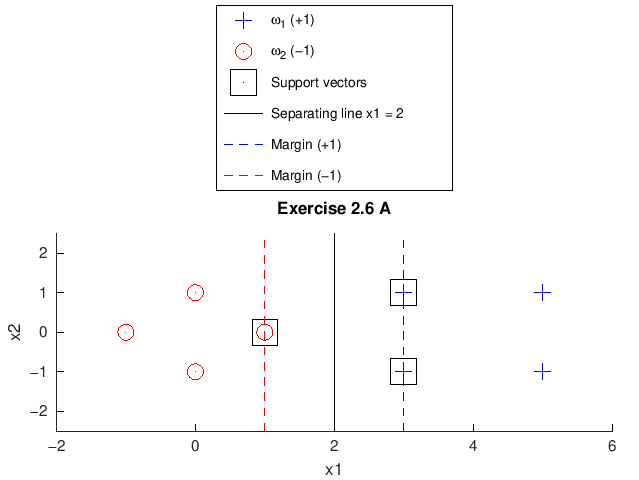
Τα δείγματα των δύο κλάσεων που βρίσκονται πιο κοντά μεταξύ τους είναι τα [3, 1]T και [3, −1]T της ω1 και το [1, 0]T της ω2. Αυτά είναι τα support vectors. Διαισθητικά, το υπερεπίπεδο με το μέγιστο περιθώριο είναι η κατακόρυφη ευθεία x1 = 2, που βρίσκεται στη μέση ανάμεσα στην ευθεία x1 = 3 (όπου βρίσκονται τα δύο support vectors της ω1) και στο σημείο [1, 0]T. Η απόσταση κάθε support vector από την ευθεία είναι 1, άρα το πλάτος του περιθωρίου είναι 2. Οποιαδήποτε στροφή ή μετατόπιση της ευθείας θα έφερνε κάποιο από τα τρία αυτά δείγματα πιο κοντά της.
Θέτουμε yi = +1 για την ω1 και yi = −1 για την ω2. Ελαχιστοποιούμε το ½‖w‖2 με τους περιορισμούς yi(wTxi + w0) ≥ 1. Η Λαγκρανζιανή είναι
L(w, w0, λ) = ½‖w‖2 − Σi λi [ yi(wTxi + w0) − 1 ]
και οι συνθήκες ΚΚΤ είναι:
(i) w = Σi λi yi xi, (ii) Σi λi yi = 0, (iii) λi ≥ 0, (iv) λi [ yi(wTxi + w0) − 1 ] = 0
Υποθέτουμε ότι μόνο τα τρία support vectors έχουν λ ≠ 0: λ1 για το [3, 1]T, λ2 για το [3, −1]T και λ3 για το [1, 0]T. Από τη (ii) έχουμε λ1 + λ2 = λ3 και από την (i):
w = λ1[3, 1]T + λ2[3, −1]T − λ3[1, 0]T = [3λ1 + 3λ2 − λ3, λ1 − λ2]T = [2λ3, λ1 − λ2]T
Από τη (iv), για τα τρία αυτά δείγματα οι περιορισμοί ισχύουν ως ισότητες:
3w1 + w2 + w0 = 1, 3w1 − w2 + w0 = 1, w1 + w0 = −1
Αφαιρώντας τις δύο πρώτες βρίσκουμε w2 = 0, άρα λ1 = λ2. Αφαιρώντας την τρίτη από την πρώτη βρίσκουμε 2w1 = 2, άρα w1 = 1 και w0 = −2. Τέλος 2λ3 = w1 = 1, οπότε:
λ1 = λ2 = 1/4, λ3 = 1/2, w = [1, 0]T, w0 = −2
Όλα τα λ είναι θετικά και τα υπόλοιπα δείγματα ικανοποιούν τους περιορισμούς: για τα [5, ±1]T έχουμε wTx + w0 = 3 ≥ 1, για τα [0, ±1]T έχουμε −2 ≤ −1 και για το [−1, 0]T έχουμε −3 ≤ −1. Άρα ικανοποιούνται όλες οι συνθήκες ΚΚΤ και η βέλτιστη γραμμή διαχωρισμού είναι η x1 − 2 = 0, δηλαδή η x1 = 2, με πλάτος περιθωρίου 2/‖w‖ = 2. Το αποτέλεσμα συμφωνεί με αυτό που προτείναμε διαισθητικά στο ερώτημα 1. Τις ίδιες τιμές (w = [1, 0], w0 = −2) δίνει και το αρχείο ex_2_6a.m, καθώς και η αριθμητική επίλυση του δυικού προβλήματος.
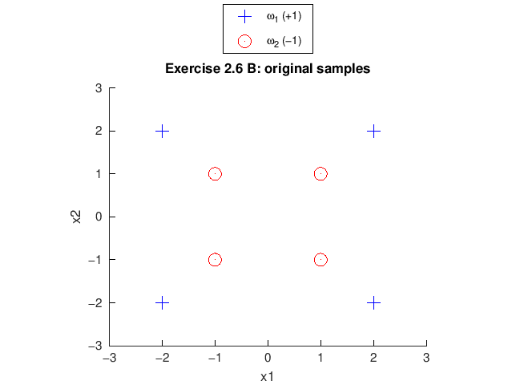
Τα δείγματα της ω2 βρίσκονται μέσα στο τετράγωνο που σχηματίζουν τα δείγματα της ω1. Κάθε ευθεία που αφήνει και τα τέσσερα δείγματα της ω2 από τη μία πλευρά της αφήνει από την ίδια πλευρά και τουλάχιστον ένα δείγμα της ω1, επομένως οι δύο κλάσεις δεν είναι γραμμικά διαχωρίσιμες. Στον αρχικό χώρο δεν υπάρχει λοιπόν γραμμικό υπερεπίπεδο διαχωρισμού και το πρόβλημα του SVM με αυστηρό περιθώριο δεν έχει λύση, οπότε δεν ορίζονται ούτε support vectors. Χρειάζεται ένας μη γραμμικός μετασχηματισμός των δειγμάτων.
Διαβάσαμε τον μετασχηματισμό της εκφώνησης ως Φ(x) = x − 4·‖x‖2 − 4, δηλαδή από κάθε συνιστώσα του x αφαιρείται ο αριθμός 4‖x‖2 + 4. Για τα δείγματα της ω1 είναι ‖x‖2 = 2√2, άρα αφαιρείται το 8√2 + 4 = 15.3137, ενώ για τα δείγματα της ω2 είναι ‖x‖2 = √2 και αφαιρείται το 4√2 + 4 = 9.6569. Τα νέα διανύσματα χαρακτηριστικών είναι:
| ω1 | ω2 | ||
|---|---|---|---|
| x | Φ(x) | x | Φ(x) |
| [2, 2] | [−13.3137, −13.3137] | [1, 1] | [−8.6569, −8.6569] |
| [2, −2] | [−13.3137, −17.3137] | [1, −1] | [−8.6569, −10.6569] |
| [−2, −2] | [−17.3137, −17.3137] | [−1, −1] | [−10.6569, −10.6569] |
| [−2, 2] | [−17.3137, −13.3137] | [−1, 1] | [−10.6569, −8.6569] |
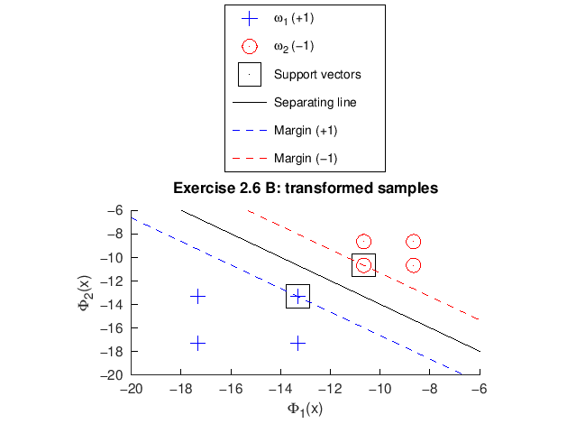
Μετά τον μετασχηματισμό οι δύο κλάσεις απομακρύνονται κατά μήκος της διαγωνίου και γίνονται γραμμικά διαχωρίσιμες. Τα πλησιέστερα δείγματα των δύο κλάσεων είναι τα Φ([2, 2]T) και Φ([−1, −1]T), που βρίσκονται και τα δύο πάνω στη διαγώνιο. Διαισθητικά, η βέλτιστη ευθεία είναι η μεσοκάθετος του ευθύγραμμου τμήματος που τα ενώνει.
Θέτουμε a = 2 + 8√2 = 13.3137 και b = 5 + 4√2 = 10.6569, ώστε τα δύο support vectors να γράφονται x+ = −a[1, 1]T (κλάση ω1, y = +1) και x− = −b[1, 1]T (κλάση ω2, y = −1). Υποθέτουμε ότι μόνο αυτά έχουν λ ≠ 0. Από τη συνθήκη (ii) έχουμε λ+ = λ− = λ και από την (i):
w = λ(x+ − x−) = −λ(a − b)[1, 1]T
Από τη (iv) οι περιορισμοί των δύο δειγμάτων ισχύουν ως ισότητες, wTx+ + w0 = 1 και wTx− + w0 = −1. Αφαιρώντας τες παίρνουμε wT(x+ − x−) = 2, δηλαδή λ‖x+ − x−‖2 = 2λ(a − b)2 = 2, και προσθέτοντάς τες w0 = −½ wT(x+ + x−). Με a − b = 4√2 − 3 = 2.6569 και a + b = 23.9706 βρίσκουμε:
λ = 1/(a − b)2 = 0.1417, w = −[1, 1]T/(a − b) = [−0.3764, −0.3764]T, w0 = −(a + b)/(a − b) = −9.0222
Το λ είναι θετικό και για τα υπόλοιπα έξι δείγματα οι περιορισμοί ικανοποιούνται (η μικρότερη τιμή του yi(wTΦ(xi) + w0) σε όλα τα δείγματα είναι 1), άρα ισχύουν όλες οι συνθήκες ΚΚΤ. Το βέλτιστο υπερεπίπεδο διαχωρισμού στον μετασχηματισμένο χώρο είναι επομένως
−0.3764 Φ1 − 0.3764 Φ2 − 9.0222 = 0, δηλαδή Φ1 + Φ2 = −(a + b) = −23.9706
με πλάτος περιθωρίου 2/‖w‖ = √2(a − b) = 3.7574, όσο και η απόσταση των δύο support vectors. Πρόκειται για τη μεσοκάθετο που προτείναμε στο ερώτημα 2. Τις ίδιες τιμές δίνει το αρχείο ex_2_6b.m και η αριθμητική επίλυση του δυικού προβλήματος στα μετασχηματισμένα δείγματα.
Στην άσκηση αυτή, ασχοληθήκαμε με ένα πρόβλημα βελτιστοποίησης με περιορισμούς, χρησιμοποιώντας Support Vector Machines. Θέλουμε να προβλέψουμε τις τιμές y(i) από τις αντίστοιχες τιμές x(i), i ∈ {1, …, n}. Αποθηκεύουμε όλα τα δεδομένα σε ένα πίνακα X, όπου οι γραμμές είναι τα δείγματα και οι στήλες τα χαρακτηριστικά. Αρχικά προβάλλουμε τα δεδομένα:
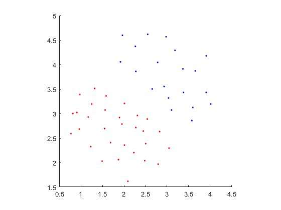
Σε όλα τα μέρη της άσκησης, η μεγιστοποίηση της Λαγκρανζιανής του δυικού προβλήματος γράφεται ως ελαχιστοποίηση της ½λTHλ − Σi λ(i), με Hij = y(i)y(j)K(x(i), x(j)), ώστε να λυθεί με τη συνάρτηση quadprog. Support vectors θεωρούμε τα δείγματα με λ(i) > 10−4 (για C < 1 το κατώφλι πολλαπλασιάζεται με το C). Τα βάρη υπολογίζονται από τη σχέση w = Σi λ(i)y(i)x(i), το bias ως ο μέσος όρος των y(k) − w·x(k)T στα support vectors που βρίσκονται πάνω στο περιθώριο, και το πλάτος της λωρίδας μεταξύ των support vectors ως 2/‖w‖. Τα αριθμητικά αποτελέσματα που ακολουθούν υπολογίστηκαν με τον επιλυτή qp του GNU Octave στη θέση της quadprog του MATLAB και ενδέχεται να διαφέρουν ελαφρά στο MATLAB.
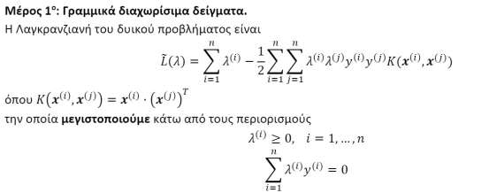
Χρησιμοποιούμε τα 50 πρώτα παραδείγματα του αρχείου twofeature1.txt, τα οποία είναι γραμμικά διαχωρίσιμα, και λύνουμε το πρόβλημα με μοναδικούς περιορισμούς λ(i) ≥ 0 και Σi λ(i)y(i) = 0, χωρίς άνω φράγμα στα λ. Τα αποτελέσματα είναι:
| Support vectors (δείκτες) | λ | w | w0 | Πλάτος λωρίδας |
|---|---|---|---|---|
| 12, 13 (y = +1), 48 (y = −1) | 6.3044, 1.6355, 7.9398 | [2.5414, 3.0694] | −16.3162 | 0.5019 |
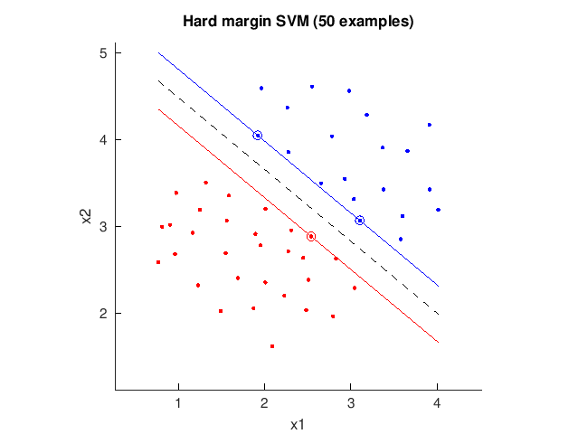
Η γραμμή διαχωρισμού είναι η 2.5414x1 + 3.0694x2 − 16.3162 = 0. Μόνο τρία δείγματα έχουν λ ≠ 0, δύο της κλάσης +1 και ένα της κλάσης −1, και βρίσκονται ακριβώς πάνω στις δύο παράλληλες γραμμές w·xT + w0 = ±1. Όλα τα υπόλοιπα δείγματα βρίσκονται έξω από τη λωρίδα (η μικρότερη τιμή του y(i)(w·x(i)T + w0) είναι 1) και κανένα δείγμα δεν ταξινομείται λάθος.
Επαναλάβαμε ό,τι και στο προηγούμενο μέρος, αλλά για όλα τα δεδομένα του αρχείου (51 παραδείγματα) και με τους περιορισμούς 0 ≤ λ(i) ≤ C. Το 51ο παράδειγμα ανήκει στην κλάση +1 αλλά βρίσκεται μακριά από τα υπόλοιπα δείγματα της κλάσης του, στο σημείο (0.09, 4.10). Για διάφορες τιμές του C πήραμε τα εξής αποτελέσματα:
| C | Support vectors | από αυτά με λ = C | w | w0 | Πλάτος λωρίδας | Λάθος ταξινομημένα |
|---|---|---|---|---|---|---|
| 0.01 | 42 | 42 | [0.1842, 0.2181] | −1.2426 | 7.0058 | 3 |
| 0.1 | 28 | 26 | [0.7240, 1.0396] | −5.2272 | 1.5787 | 1 |
| 1 | 12 | 9 | [1.4067, 2.1332] | −10.3450 | 0.7827 | 1 |
| 10 | 7 | 4 | [2.0522, 4.1681] | −18.2454 | 0.4305 | 1 |
| 100 | 3 | 0 | [4.6838, 13.0958] | −53.1565 | 0.1438 | 0 |
| 1000 | 3 | 0 | [4.6838, 13.0958] | −53.1565 | 0.1438 | 0 |
| 10000 | 3 | 0 | [4.6838, 13.0958] | −53.1565 | 0.1438 | 0 |
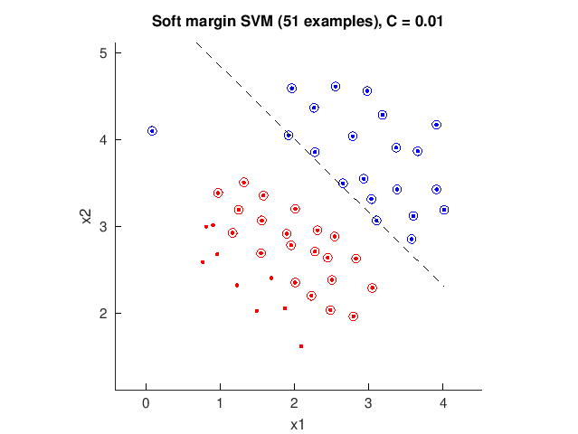
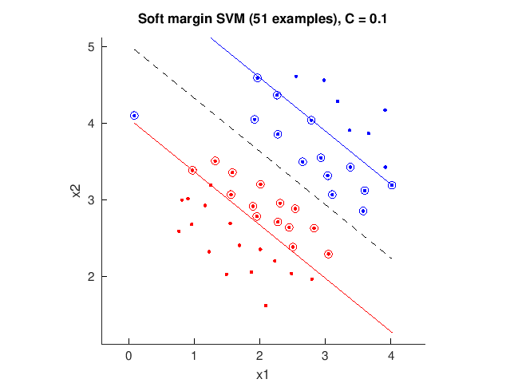
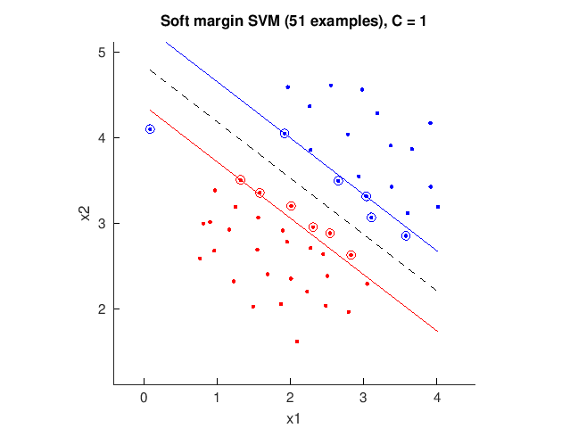
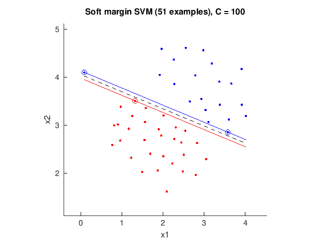
Όσο μικρότερο είναι το C, τόσο μεγαλύτερη είναι η ανοχή σε δείγματα που βρίσκονται μέσα στη λωρίδα ή στη λάθος πλευρά: η λωρίδα γίνεται πλατύτερη, ο αριθμός των support vectors αυξάνεται και το απομακρυσμένο 51ο παράδειγμα ταξινομείται λάθος, χωρίς να επηρεάζει ιδιαίτερα τη γραμμή διαχωρισμού (για C = 0.01 ταξινομούνται λάθος και τα παραδείγματα 12 και 13, που βρίσκονται πολύ κοντά στη γραμμή). Όσο αυξάνεται το C, τα λάθη κοστίζουν περισσότερο, η λωρίδα στενεύει και η γραμμή στρέφεται ώστε να ταξινομήσει σωστά και το 51ο παράδειγμα. Για C ≥ 100 κανένα λ δεν φτάνει στο άνω φράγμα, όλα τα δείγματα ταξινομούνται σωστά και η λύση δεν αλλάζει άλλο (είναι η λύση με αυστηρό περιθώριο για τα 51 παραδείγματα). Το πλάτος της λωρίδας όμως πέφτει στο 0.1438, από 0.5019 που ήταν στο 1ο μέρος χωρίς το 51ο παράδειγμα. Ένα μόνο απομακρυσμένο δείγμα αρκεί δηλαδή για να αλλάξει πολύ τη λύση όταν δεν επιτρέπεται καμία ανοχή.
Τα 100 παραδείγματα του αρχείου twofeature2.txt δεν είναι γραμμικά διαχωρίσιμα: τα δείγματα της κλάσης +1 βρίσκονται γύρω από την αρχή των αξόνων και περιβάλλονται από τα δείγματα της κλάσης −1. Προσθέτουμε λοιπόν σε κάθε παράδειγμα ως τρίτο χαρακτηριστικό το τετράγωνο του μέτρου του, (x1, x2) → (x1, x2, x12 + x22), και λύνουμε το ίδιο δυικό πρόβλημα με το 2ο μέρος (0 ≤ λ(i) ≤ C) στα τρισδιάστατα πλέον δείγματα. Τα αποτελέσματα είναι:
| C | Support vectors | w | w0 | Λάθος ταξινομημένα |
|---|---|---|---|---|
| 0.1 | 61 | [−0.0299, −0.1550, −1.7687] | 1.1723 | 6 |
| 1 | 27 | [−0.3886, −0.1391, −3.5127] | 1.8639 | 3 |
| 10 | 15 | [−0.7833, −0.3624, −6.0749] | 2.9842 | 3 |
| 100 | 10 | [−0.7149, −0.4661, −7.4458] | 3.6608 | 3 |
| 1000 | 10 | [−0.7149, −0.4661, −7.4458] | 3.6608 | 3 |
| 10000 | 10 | [−0.7149, −0.4661, −7.4458] | 3.6608 | 3 |
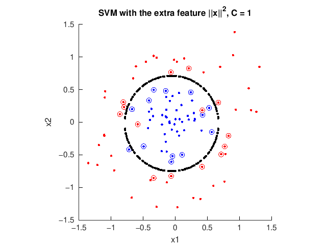
Στον χώρο των τριών χαρακτηριστικών η επιφάνεια απόφασης είναι επίπεδο, w1x1 + w2x2 + w3(x12 + x22) + w0 = 0. Στο αρχικό επίπεδο (x1, x2) η ίδια εξίσωση περιγράφει κύκλο: για C = 1 έχει κέντρο το (−0.055, −0.020) και ακτίνα 0.731, ενώ για C = 100 έχει κέντρο το (−0.048, −0.031) και ακτίνα 0.704. Τα δείγματα μέσα στον κύκλο ταξινομούνται στην κλάση +1 και τα δείγματα έξω από αυτόν στην κλάση −1. Το μεγαλύτερο βάρος κατ' απόλυτη τιμή είναι το w3, δηλαδή η ταξινόμηση βασίζεται σχεδόν αποκλειστικά στο νέο χαρακτηριστικό.
Όπως και στο 2ο μέρος, όσο αυξάνεται το C μειώνεται ο αριθμός των support vectors. Τα δεδομένα όμως δεν είναι τέλεια διαχωρίσιμα ούτε μετά την προσθήκη του τρίτου χαρακτηριστικού, γι' αυτό ακόμα και για πολύ μεγάλο C παραμένουν 3 λάθος ταξινομημένα δείγματα από τα 100, και από C = 100 και πάνω η λύση δεν αλλάζει. Το πλάτος της λωρίδας δεν υπολογίζεται σε αυτό το μέρος.